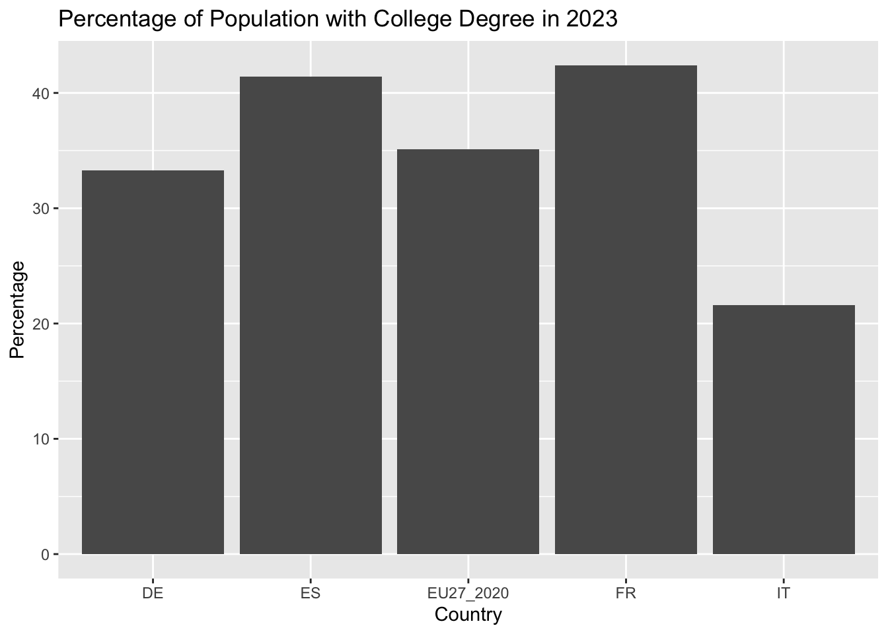

The European Union collects extensive data on its member states and their populations. The cheif repository for this data is Eurostat. The restatapi package provides an interface to the Eurostat API. The following code demonstrates how to access data on the population of the EU member states and pull it directly into R. In order to get started, we need to load the tidyverse and restatapi packages.
You can find a list of all available datasets on the [Eurostat website]https://ec.europa.eu/eurostat/data/database. The get_eurostat_data function allows you to access these datasets directly from R. The function takes the dataset code as an argument. The dataset code for educational attainment of the EU member states by age and gender is edat_lfse_03. The following code demonstrates how to access this dataset and store it in a data frame called EUEduc. It then generates a summary of the dataset.
sex age unit isced11 geo
F:41349 Y25-34 :13823 PC:124158 ED0-2 :28355 BE : 3954
M:41380 Y30-34 :13803 ED3-8 :28371 EL : 3954
T:41429 Y20-24 :13742 ED3_4 :28366 ES : 3954
Y15-64 :12297 ED3_4GEN: 5356 IT : 3954
Y25-64 :12297 ED3_4VOC: 5406 PT : 3954
Y35-44 :12295 ED5-8 :28304 DK : 3951
(Other):45901 (Other):100437
time values
2023 : 6270 Min. : 0.40
2022 : 6269 1st Qu.:20.20
2021 : 6268 Median :37.00
2016 : 5102 Mean :41.82
2017 : 5092 3rd Qu.:61.50
2018 : 5092 Max. :98.40
(Other):90065
The summaries of some of the variables in the dataset are portrayed differently than others. Some of the variables, like sex, are categorical, so the summary shows the number of observations for each category. The only numeric, continuous variable is “values,” so the summary shows the mean, median, and other statistics for that variable. This dataset is in long format, meaning that each row represents a unique combination of the categorical variables.
Getting to Know the Data
When you are working with a new dataset, it is important to get to know the data before you start analyzing it. We’ve already looked at a summary of the whole dataset, but that summary didn’t show us all of the values for each variable. So, we can also look at summaries of individual variables for more information. In order to access columns within a dataset, we use the $ operator.
This summary shows all of the levels of the factor variable “age” and the number of observations for each level. Factor variables are R’s way of dealing with categorical data. Here we can see that the age variable has levels that correspond to age ranges, but that the age ranges overlap, so we’ll have to be intentional about how we build comparisons.
This summary shows all of the levels of the factor variable “isced11” and the number of observations for each level. The isced11 variable is a factor variable that represents the International Standard Classification of Education (ISCED) levels. The ISCED levels are a way of categorizing the level of education that a person has completed. ED0-2 corresponds to pre-primary, primary, and lower secondary education, ED3-4 corresponds to upper secondary and post-secondary non-tertiary education, and ED5-8 corresponds to tertiary education.
Filtering the data to make comparisons
“value” represents the percentage of the population that falls into the category defined by the other variables.So, in the next chunk, we filter the data to show only the observation where sex is “Total,” age is “25-64,” isced11 is “ED5-8,” geo is “Italy,” and time is “2023.” The value column therefore shows the percentage of the total population of Italy between 25 and 64 in 2023 that has completed ISCED levels 5-8, or some kind of college degree.
Key: <sex, age, unit, isced11, geo>
sex age unit isced11 geo time values
<fctr> <fctr> <fctr> <fctr> <fctr> <fctr> <num>
1: T Y25-64 PC ED5-8 IT 2023 21.6
This shows that 21.6% of the population of Italy between the ages of 25 and 64 in 2023 has a college degree or higher.
In most cases, we’re going to want to do a comparison across categories, so we can adjust our filters differently in order to show the slices of this dataset that highlight the comparisons we want. For example, if we just drop the sex filter, we can see the percentage of the population with a college degree in Italy in 2023 broken down by sex.
Key: <sex, age, unit, isced11, geo>
sex age unit isced11 geo time values
<fctr> <fctr> <fctr> <fctr> <fctr> <fctr> <num>
1: F Y25-64 PC ED5-8 IT 2023 24.9
2: M Y25-64 PC ED5-8 IT 2023 18.3
3: T Y25-64 PC ED5-8 IT 2023 21.6
So, we can see that women are more likely to go to college in Italy than men.
If we wanted to know how college attendance in Italy compared to that in other countries, we could adjust the geo filter to include multiple countries using the “|” operator which means “or.” I’ve used “or” to include Italy, Germany, France, Spain, and the 27 members of the European Union as a whole.
Key: <sex, age, unit, isced11, geo>
sex age unit isced11 geo time values
<fctr> <fctr> <fctr> <fctr> <fctr> <fctr> <num>
1: T Y25-64 PC ED5-8 DE 2023 33.3
2: T Y25-64 PC ED5-8 ES 2023 41.4
3: T Y25-64 PC ED5-8 EU27_2020 2023 35.1
4: T Y25-64 PC ED5-8 FR 2023 42.4
5: T Y25-64 PC ED5-8 IT 2023 21.6
The following code chunk adds a few steps to the previous code that uses the kable() package to generate a more attractive table.
EUEduc %>%filter(sex=="T", age=="Y25-64", isced11=="ED5-8", geo=="IT"|geo=="DE"|geo=="FR"|geo=="ES"|geo=="EU27_2020", time=="2023") %>%add_column(Country =c("Germany", "Spain", "European Union", "France", "Italy")) %>%select(Country, values) %>%kable(digits=3, col.names =c("Country", "Percent"), row.names=FALSE, caption ="Working-Age Population with College Degree in 2023")
Working-Age Population with College Degree in 2023
Country
Percent
Germany
33.3
Spain
41.4
European Union
35.1
France
42.4
Italy
21.6
Using ggplot() for data visualizations
Data visualization is about creating the right visual representation of the data to communicate the information effectively. The ggplot2 package is a powerful tool for creating visualizations in R. ggplot2 is loaded along with the other ‘tidyverse’ packages. The following code demonstrates how to create a bar plot of the percentage of the population with a college degree in the EU member states in 2023.
# Bar Plot of the percentage of the population with a college degree in the EU member states in 2023EUEduc %>%filter(sex=="T", age=="Y25-64", isced11=="ED5-8", geo=="IT"|geo=="DE"|geo=="FR"|geo=="ES"|geo=="EU27_2020", time=="2023") %>%ggplot(aes(x=geo, y=values)) +geom_bar(stat="identity") +labs(title="Percentage of Population with College Degree in 2023",x="Country",y="Percentage")

In order to make a plot using ggplot(), we build the components of the plot piece by piece. In the code chunk above we:
Call the dataset
Filter the dataset to show only the observations we need for this plot.
Call ggplot and specify the aesthetics of the plot, which corresponds to the main pieces of information we’re plotting: geo(country) and value(percentage).
We call geom_bar() to specify that we want to make a bar plot. The stat=“identity” argument tells ggplot that the values in the dataset are the actual values we want to plot, rather than counts or some other transformation of the data. In other words, the “values” are already percentages and we don’t need to calculate the mean or percentage or count.
We use labs() to add a title and labels to the x and y axes.
Going from long to wide format
The function we’ve used to access the data automatiically formats the data in long or tidy form, which means that there is only one observation per row. That’s why there is only one value for each combination of the other variables. This long format is best for generating plots and is most flexible. However, sometimes we want to compare the values of a variable across different categories in a table. In order to do that, we need to convert the data to wide format. The pivot_wider() function from the tidyverse package allows us to do this.
Let’s say we want to show the percentage of women, men and the total population in Italy, Germany, France, Spain and in the EU as a whole in 2023. We can use the following code to convert the data to wide format.
# Bar Plot of the percentage of the population with a college degree in the EU member states in 2023EUEduc %>%filter(age=="Y25-64", isced11=="ED5-8", geo=="IT"|geo=="DE"|geo=="FR"|geo=="ES"|geo=="EU27_2020", time=="2023") %>%select(geo, sex, values) %>%pivot_wider(names_from=sex, values_from=values) %>%kable(digits=3, col.names =c("Country", "Women", "Men", "Total"), row.names=FALSE, caption ="Percentage Receiving College Degrees in 2023")
Percentage Receiving College Degrees in 2023
Country
Women
Men
Total
DE
31.5
35.1
33.3
ES
45.0
37.9
41.4
EU27_2020
38.0
32.2
35.1
FR
45.6
39.1
42.4
IT
24.9
18.3
21.6
Homework
For your homework, we’re going to practice filtering the dataset in order to go about answering questions. These will mostly be adaptations of the code we’ve already written above, but you may also find it helpful to look at Healy Chapter 3. For each answer create a code chunk under the question that produces the answer to the question.
Create a table that shows the percentage of the population in Italy in 2023 that has completed ED0-2 ED3-4, and ED5-8 levels of education.
Create a bar plot that shows the some information as the table in 1.
Create a table that shows the change over time in the percentage of women in Italy with a college degree.
Create a line graph that compares the percentage of women with a college degree in Italy, Germany, France and the EU as a whole over time.
Create a table that converts the table from long to wide in order to create a table that compares the percentage of women with a college degree in Italy, Germany, France, Spain and the EU as a whole in 2023. (Hint: you’ll need to use the pivot_wider() function.)
Create your own figure to answer your own question that can be addressed by the dataset. First, write what question you want to answer, generate the figure, then write a brief explanation of what the figure shows in answer to your question and why you’ve chosen that kind of figure.